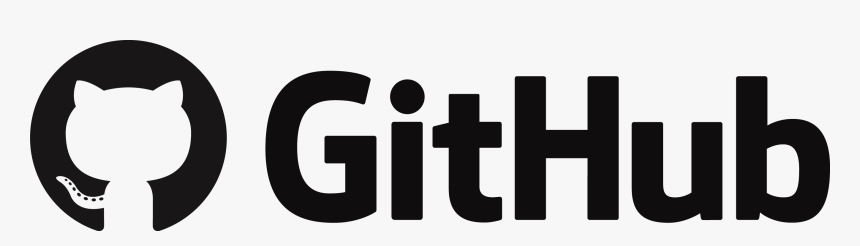
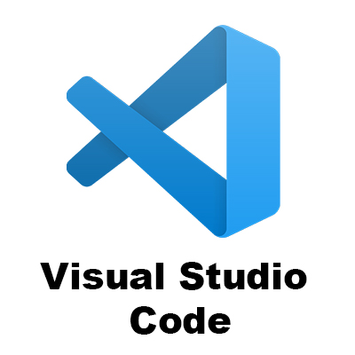

Arewa Data Science Cohort 2.0
Welcome to the Arewa Data Science Cohort Course repository! 🧑💻
Your first step in this journey is to carefully read the steps in this tutorial. ⚠️ Important: Make sure to complete all the steps during the setup week. If you are struggling with any of the steps, tell us in the #setup channel on Telegram! In this tutorial, you’ll learn:
- Telegram usage and etiquette specific to ArewaDS;
- How to set up your software environment;
- The weekly workflow to follow during the Cohort.
We have provided detailed instructions, but you might not understand all the details of the setup for now. It will become clearer as you proceed with the course. So don’t despair, put on your patience hat, and ask for help when needed. There’s light at the other end of the tunnel. :star2:
1. How to use Telegram and how to ask for help
First and foremost, we’ll talk about how to use our communication tool, Telegram. You will learn how to use it effectively and how to use it to ask for help. Click on the image to follow the link.
2. Initial Setup
Please choose your operating system:

|

|

|
3. Setup Git and GitHub
Click on the image to follow the link.
|  |
4. Setup for all operating systems - Python virtual environment
Click on the image to follow the link.

|
5. VSCode Setup Guide
Follow this guide to set up your Visual Studio Code (VSCode) environment for optimal performance and efficiency in your data science projects. Click on the image to access the detailed setup instructions.
|  |
6. Weekly workflow
The workflow that you will follow every week with every new learning unit. Click on the image to follow the link.

|